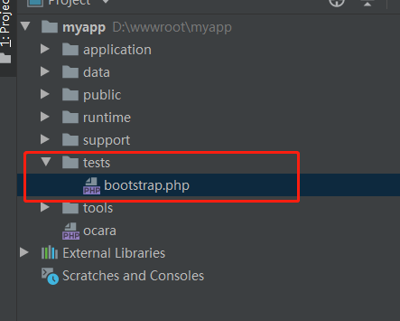
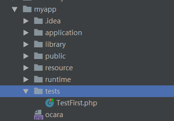
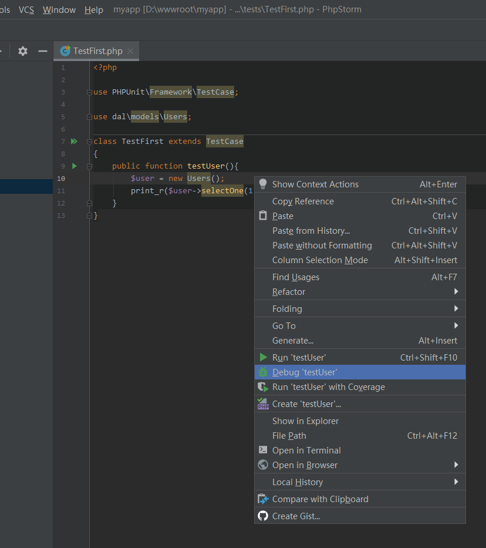

4.22 单元测试
在前后端分离的团队开发中，单元测试对于后端开发，可以不需要联调就能测试自己的代码逻辑，比较重要。
一、如何使用单元测试
首先，我们需要安装单元测试程序，比如PHPUnit，安装过程请看官方教程。
然后就按照下面的方法开始单元测试。
2、如何开始单元测试
执行单元测试最主要的是如何启动框架。
在应用生成时，框架自动生成了tests目录，其中含有bootstrap.php文件存在启动代码，只要修改好框架的路径就好。

/*
/**
* 单元测试启动文件
*/
use Ocara\Core\Ocara;
//程序执行开始时间
define('OC_EXECUTE_START_TIME', microtime(true));
//定义根目录
define('OC_ROOT', dirname(__DIR__));
/**
* 加载框架
* 请修改和确定以下路径
*/
//require_once(OC_ROOT . '/ocara/system/library/Core/Ocara.php');
require_once OC_ROOT . '/vendor/autoload.php';
Ocara::start('Ocara\Bootstraps\Tests');
二、单元测试实例
1、添加单元测试类
假设已经安装了PHPUnit，在我们的应用根目录中新建tests目录，里面添加一个TestFirst.文件，截图如下：

文件内容如下:
use PHPUnit\Framework\TestCase;
use dal\models\Users;
class TestFirst extends TestCase
{
public function testUser(){
$user = new Users();
print_r($user->selectOne(1));
}
}
2、执行单元测试
（1）命令执行
要带上--bootstrap参数，提前设置启动文件，或者在phpunit.xml配置（放在项目根目录）。
phpunit --bootstrap ./autoload.php TestFirst
（2）编辑器执行
建议用编辑器调试，考虑到有的朋友不会配置，下面第三点给分享一下4.23_单元测试编辑器设置分享。
